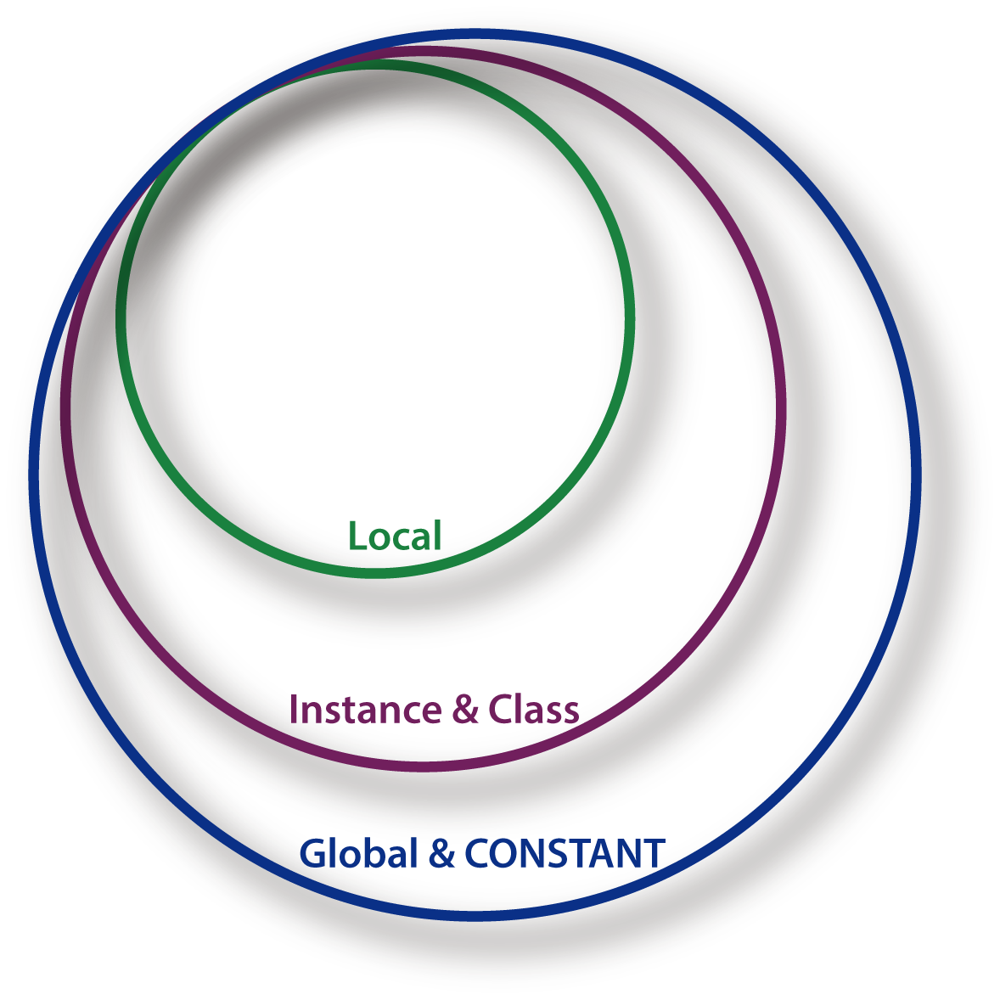

There are a few kinds of variables in ruby and each of the variable serves differently. As an entry-level rubyist, it’s one of the most important basics we need to master.
Local Variable
Local variables are variables created with a value assigned. They are called local variables because they are local, and they only work within the scope they were created. For example, a local variable created within a method can only be used inside the method. If you want to use the variable outside the method, then you might want to consider using the next variable which I’m going to talk about.
Instance Variable & Class Variable
Instance variable works for instances of class object. When an instance is created, usually instance variables are created. Each of them starts with an “@” in front of their variable name. For example, @instance_variable.Class variable is just like its name – it works within the class. Class variables start with two “@” in the front of their names. For example, @@class_variable would be a class variable that is available for everything in the class.It does not matter whether you want to access them outside or inside a method. You can call them anytime you want as long as the scope is within the class. One thing to be careful is the difference between instance variable and class variable. They are both at the class scope. However, instance variable can hold different values in each object instance but class variable is always the same value. Like a can of soda, the flavor of the soda can be an instance variable, and each soda has different flavor. Whereas class variable can be the size of the soda can – it’s one-size for the product line.
Global Variable & Constant
Global variable and constant can be accessed anywhere in the file. The differences between them are when you try to change a constant, ruby will give you a warning but still let you make the change. Also for global variables, there is a $ in front of their names, like $global_variable. On the other hand, constant names are all capped.
